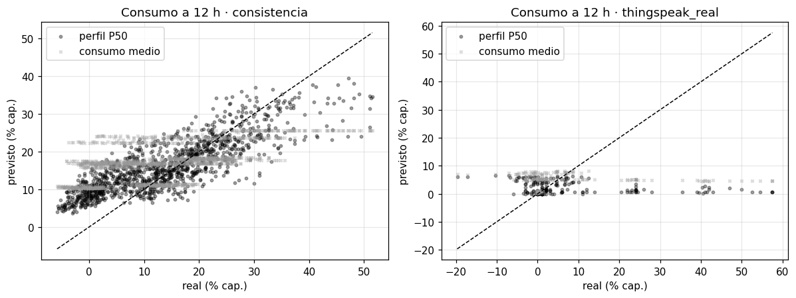
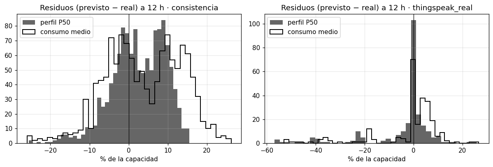
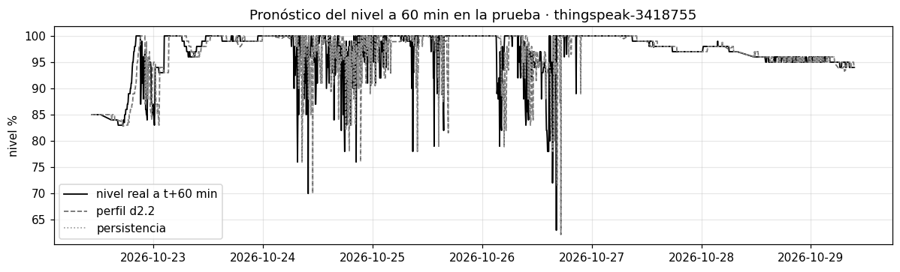
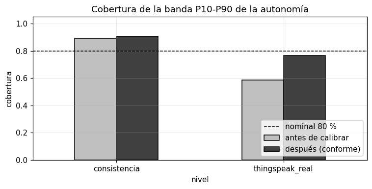
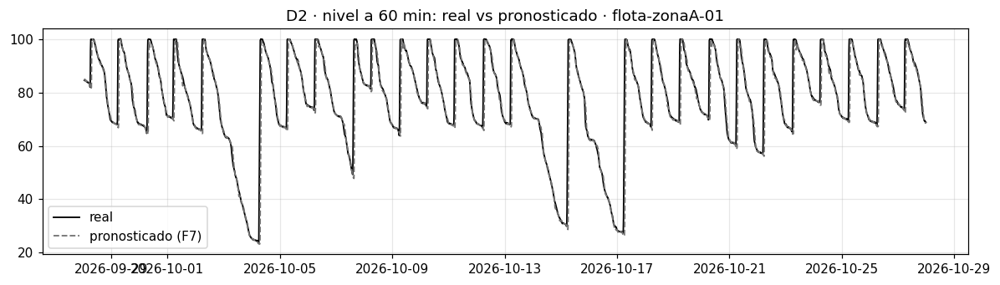
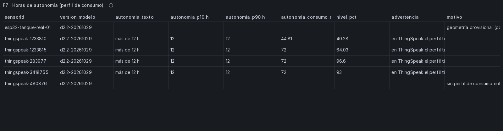
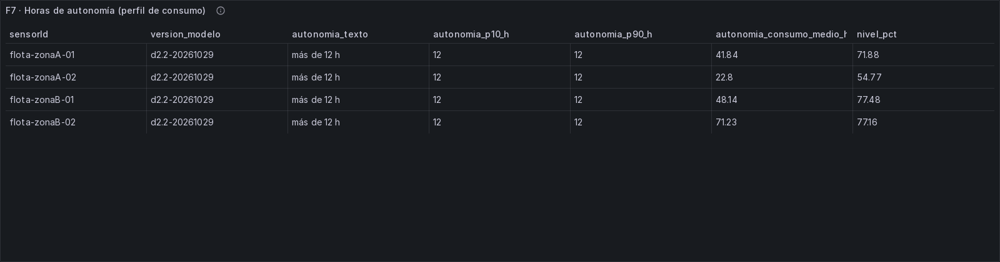
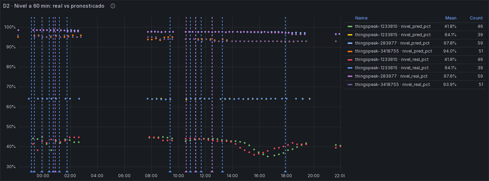

Modelo D2: horas de autonomía del tanque¶
Dimensión D2 (Claudio Bustinza). Dos versiones, las dos con la partición p6.1:
Gráficos y evidencia: al final de la página, en Gráficos del notebook y del tablero en vivo.
| Versión | Modelo principal | Código | Evidencia |
|---|---|---|---|
d2.1 (commit 6f9bcae) |
Holt (nivel + tendencia) | batch/modelo_d2.py, batch/holt.py |
docs/evidencias/f6-d2/ |
d2.2 (sección 12) |
Perfil de consumo por hora del día | batch/modelo_d2_perfil.py, batch/perfil_consumo.py |
docs/evidencias/f6-d2/d2.2/ |
Las secciones 1-11 describen d2.1, y casi todo vale también para d2.2: la pregunta, los datos, la censura y la partición. La sección 12 resume qué cambió en d2.2 y compara las dos versiones sobre las mismas filas.
1. Qué pregunta responde y qué decisión habilita¶
¿Cuántas horas le quedan al tanque antes de quedar casi vacío, si se sigue gastando como en las últimas horas?
"Casi vacío" es un umbral configurable; por defecto, el 10 % del nivel.
La respuesta sirve para decidir a tiempo:
- Si la autonomía es baja y no se espera agua pronto (eso lo dice D4): avisar a la familia o al administrador para que raciones, pidas una cisterna o llenes el tanque mientras hay servicio.
- Si la autonomía es alta: no hay que hacer nada.
En F7, este modelo correrá en vivo y alimentará el indicador del tablero y el evento autonomia_baja.
2. Datos¶
- Tabla:
d2_autonomiade la capa oro de F6. Es el nivel en % cada 5 min (la mediana de cada bloque), cortado en tramos continuos y sin rellenar huecos. - Tres niveles de datos, que se reportan siempre por separado:
| Nivel | Qué es | Para qué sirve aquí |
|---|---|---|
| Consistencia | Flota extrapolada (datos aumentados, f2b.1 y f2b.2): 4 tanques × 2 corridas × 30 días | Entrenar y comprobar que el modelo funciona donde la verdad se conoce. No es métrica final |
| ThingSpeak real | 5 tanques reales con nivel (canales 1233810, 1233815, 283977, 480876 y 3418755) | La métrica real con la que se juzga el modelo |
| ESP32 real | El tanque del equipo | Métrica final pendiente (sección 7) |
- Snapshot: las fuentes se descargaron el 2026-10-29 a las 10:35 de Lima, para incluir la noche del ESP32
(
docs/evidencias/f6-d2/manifiesto_fuentes_d2.json).
3. Cómo se calculan las horas de autonomía¶
La idea es una regla de tres: si el tanque está al 60 % y baja 4 puntos por hora, llegar al 10 % le toma (60 − 10) / 4 = 12.5 horas.
horas de autonomía = (nivel actual − umbral) / velocidad de bajada (% por hora)
- Si el nivel no está bajando (de noche, por ejemplo, nadie usa agua), la fórmula no tiene sentido. El modelo responde "sin descenso previsto", que se trata como "más de 72 h".
- Cada modelo estima la velocidad de bajada a su manera. Esa es la diferencia entre ellos (sección 4).
Qué es un caso censurado¶
Para saber si el modelo acertó hay que ver cuándo llegó de verdad el tanque al 10 %. Pero casi siempre llega agua antes: el tanque se rellena y nunca llegamos a ver cuándo se habría vaciado. Ese caso está censurado: sabemos que la autonomía era al menos hasta el llenado, pero no cuánto.
- Cómo se detecta un llenado: una subida sostenida de más de 10 puntos del nivel, sobre la mediana de 15 min. Con ese criterio, en la flota salen las mismas llegadas que detecta el detector congelado de F4 (27-29 por tanque en 30 días), y en ThingSpeak 1233810, ~1 por día.
- Episodio de descenso: el tramo entre un llenado y el siguiente.
- Entrenamiento: Holt y GBT aprenden a seguir el nivel, no la autonomía. Los casos censurados no ensucian el aprendizaje, porque el nivel sí se observa siempre. Solo la elección de los parámetros de Holt usa casos de autonomía, y únicamente los no censurados del entrenamiento.
- Evaluación: el error en horas se mide solo en los casos no censurados, donde el tanque realmente bajó hasta el umbral. Siempre se informa cuántos episodios hubo y cuántos fueron censurados.
- ¿Por qué no se cuentan los censurados como error? Sería inventar una verdad que no se observó.
4. Los modelos¶
Holt (principal)¶
Holt es un promedio que se actualiza con cada lectura y recuerda dos cosas: el nivel actual "limpio" (sin el ruido del sensor) y la velocidad a la que viene cambiando. Tiene dos perillas:
- alpha: cuánto se cree en la lectura nueva frente a lo que ya se sabía.
- beta: qué tan rápido se cambia de opinión sobre la velocidad. Un beta chico = una velocidad con memoria larga.
Por qué Holt:
- Da justo lo que necesita la autonomía: un nivel y una velocidad. Con la regla de tres de arriba sale la respuesta.
- Es liviano: guarda dos números por tanque y se actualiza con cada lectura. Encaja con el streaming de F7, y
batch/holt.pyse usará allí tal cual. - Es explicable: se puede mostrar en el tablero de dónde sale cada número.
Un hallazgo del ajuste: las perillas se eligen de dos formas, siempre solo con datos de entrenamiento, y las dos chocan.
| Ajustado para… | Flota | ThingSpeak real | Qué pasa |
|---|---|---|---|
Pronosticar el nivel a 15-60 min (holt_pronostico) |
alpha 0.7 · beta 0.4 | alpha 1.0 · beta 0.0 | En ThingSpeak, se convierte en persistencia: velocidad siempre cero. Entonces nunca prevé una bajada y en autonomía dice "sin descenso" en el 95 % de los casos |
Estimar la autonomía (holt, el principal) |
alpha 1.0 · beta 0.03 | alpha 0.1 · beta 0.1 | Velocidad con memoria larga: pronostica peor el nivel a 15-60 min, pero sirve para la pregunta de D2 |
Por eso el modelo principal se ajusta con el objetivo de la dimensión, las horas de autonomía, y el otro queda solo como comparación. Ese ajuste usa los casos no censurados del entrenamiento: 1,726 orígenes en la flota y 394 en ThingSpeak.
GBT de Spark MLlib (comparación)¶
GBTRegressor es un conjunto de árboles de decisión entrenados uno tras otro, cada uno corrigiendo los errores
del anterior. Pronostica cuánto cambiará el nivel en 15 y en 60 min a partir de:
- las lecturas recientes y sus diferencias;
- las medias móviles;
- la hora del día y el día de la semana;
- las horas desde el último llenado;
- la tendencia de las últimas 3 h.
Por qué GBT: ve cosas que Holt no ve, como que a cierta hora siempre se gasta más. Además es el modelo de MLlib que exige la rúbrica (criterio 7). Para la autonomía se usa su pronóstico a 60 min como velocidad de bajada.
Variables más importantes según el propio modelo:
- Flota: la hora del día y el último cambio.
- ThingSpeak: el nivel actual, la variabilidad reciente y los rezagos.
Líneas base (obligatorias, de batch/evaluacion.py)¶
| Pronóstico del nivel | Autonomía | |
|---|---|---|
| Persistencia | El nivel dentro de 15 o 60 min será el de ahora | La velocidad de bajada es la de la última hora |
| Tendencia lineal | Se prolonga la recta de la última hora | La velocidad es la pendiente de esa recta |
5. Cómo se evitó mirar la prueba¶
- Partición
p6.1, siempre temporal: - ThingSpeak: la prueba son los últimos 7 días de cada canal, con un día de embargo antes.
- Flota: la consistencia son los últimos ~8 días de cada corrida.
- Ajuste de hiperparámetros: solo con la partición de entrenamiento. Su último 20 % se separó como conjunto de ajuste para elegir. Después se reentrenó con todo el entrenamiento y la prueba se miró una sola vez, al final.
- Intervalos de confianza:
- Pronóstico: bootstrap por bloques de 1 h, porque lecturas seguidas no son independientes.
- Autonomía: bootstrap por episodios completos.
6. Resultados¶
Todas las cifras son del conjunto final (prueba de ThingSpeak y consistencia de la flota), con IC 95 %. Tablas
completas, con RMSE y MAPE, en docs/evidencias/f6-d2/tablas_d2.md.
Pronóstico del nivel (MAE en puntos de %; menor es mejor)¶
| Nivel | Predictor | 15 min | Mejora vs persistencia | 60 min | Mejora vs persistencia |
|---|---|---|---|---|---|
| Consistencia (n ≈ 18,000) | persistencia | 0.72 [0.65, 0.80] | — | 2.66 [2.43, 2.94] | — |
| tendencia | 0.99 [0.86, 1.13] | −37 % | 3.22 [2.83, 3.63] | −21 % | |
| holt (principal) | 0.81 [0.73, 0.88] | −12 % | 3.10 [2.84, 3.40] | −16 % | |
| holt_pronostico | 0.64 [0.56, 0.72] | +12 % | 2.93 [2.57, 3.30] | −10 % | |
| gbt | 0.41 [0.37, 0.45] | +43 % | 1.84 [1.67, 2.06] | +31 % | |
| ThingSpeak real (n 3,468 / 4,290) | persistencia | 0.78 [0.58, 0.99] | — | 1.13 [0.93, 1.36] | — |
| tendencia | 1.03 [0.80, 1.29] | −32 % | 1.99 [1.65, 2.39] | −76 % | |
| holt (principal) | 1.18 [0.96, 1.45] | −53 % | 1.77 [1.48, 2.10] | −57 % | |
| holt_pronostico | 0.78 [0.58, 0.99] | 0 % (es la persistencia) | 1.13 [0.93, 1.36] | 0 % | |
| gbt | 1.00 [0.77, 1.25] | −28 % | 1.30 [1.10, 1.53] | −15 % | |
| ESP32 real | — | pendiente | pendiente |
Horas de autonomía hasta el 10 % (MAE en horas; solo casos no censurados)¶
Los IC de esta tabla se calcularon por episodio, pero con 2-3 episodios no informan. Ver sección 12, Evidencia por umbral: la cifra al 10 % es indicativa.
| Nivel | Episodios | Llegan al 10 % | Censurados | Predictor | MAE h | Sin descenso previsto |
|---|---|---|---|---|---|---|
| Consistencia | 83 | 3 | 80 | persistencia | 13.8 [8.1, 15.8] | 20 % |
| tendencia | 14.0 [8.3, 16.5] | 20 % | ||||
| holt (principal) | 12.4 [8.7, 15.2] | 22 % | ||||
| holt_pronostico | 14.7 [8.3, 16.5] | 21 % | ||||
| gbt | 23.6 [16.1, 25.6] | 37 % | ||||
| ThingSpeak real | 137 | 2 | 135 | persistencia | 29.6 [24.4, 38.5] | 38 % |
| tendencia | 29.4 [25.3, 36.5] | 39 % | ||||
| holt (principal) | 35.6 [26.6, 50.9] | 46 % | ||||
| holt_pronostico | 64.1 [62.9, 66.2] | 95 % | ||||
| gbt | 46.6 [38.8, 59.9] | 62 % | ||||
| ESP32 real | — | — | — | pendiente |
Con umbral del 25 % (sensibilidad): en la flota se repite el orden (holt 13.2 h, persistencia 14.2 h, tendencia 14.2 h). En la prueba de ThingSpeak ningún episodio llega al 25 %, así que no hay casos no censurados.
Cómo leer estos resultados¶
- En datos reales, nada le gana a la persistencia para pronosticar el nivel a 15-60 min. En una hora el nivel de un tanque casi no cambia, salvo cuando llega agua, y eso ninguna tendencia lo anticipa. Es un resultado conocido en series de corto plazo, y por eso la persistencia es una línea base obligatoria.
- El GBT gana con holgura en la flota (+43 % y +31 %), pero pierde en ThingSpeak. En los datos aumentados aprende el ciclo diario del generador. En los tanques reales ese patrón no se repite igual, y menos en la semana de prueba. Es la razón por la que la flota se llama "consistencia" y no se usa como métrica final.
- En autonomía, Holt es el mejor en la flota (12.4 h frente a 13.8 h de la persistencia), pero con solo 3 episodios no censurados los intervalos se solapan. No se puede afirmar que sea mejor. En ThingSpeak gana la persistencia de la velocidad (29.6 h frente a 35.6 h), sobre 2 episodios.
- El error de autonomía es grande (12-35 h) por una razón clara: el consumo es intermitente. En el 20-46 % de los momentos el tanque no está bajando (de noche, por ejemplo), y cualquier método de tendencia de corto plazo responde "sin descenso". Cuando se reanuda el consumo, el tanque se vacía mucho antes de lo que decía esa respuesta.
- El 10 % casi nunca se alcanza: 3 de 83 episodios en la flota y 2 de 137 en ThingSpeak. Los tanques se rellenan antes. La evaluación de la autonomía descansa en muy pocos episodios, y eso es lo primero que hay que decir al presentarla.
Conclusión: el modelo queda entrenado, evaluado sin trampas y listo para F7, pero en datos reales no supera
a la línea base. Se reporta tal cual. La mejora natural para una versión d2.2 es estimar la velocidad de
consumo con una memoria de un día o con el perfil de consumo por hora del día, en vez de la última hora. Así se
evita el "sin descenso" nocturno. No se implementó en esta fase.
7. ESP32: métrica final pendiente¶
- Por qué está pendiente: la geometría del tanque del ESP32 es provisional en
ingesta/tanques.yml(por_medir: true,geometria_desde: null). La particiónp6.1solo abre el periodo de prueba del ESP32 desde la hora en que rija la geometría medida (y después del congelamiento de F4). Sin periodo de prueba no hay métrica final, y no se inventa una. - El tramo nocturno del 29-oct (01:40-08:30, 6.8 h continuas) es el primero del ESP32 que alcanza para un horizonte de 1 h. Sirve como diseño: con los parámetros de ThingSpeak, la persistencia da MAE 0.20 % a 15 min y 0.48 % a 60 min. El nivel casi no se movió, porque de noche no hubo consumo.
- Para cerrar la métrica:
- Medir el tanque y fijar
geometria_desde. - Acumular sesiones del ESP32 con consumo y llenados.
- Vaciados controlados registrados en la bitácora (
docs/evidencias/f4/bitacora_real.csv) durante la prueba en vivo. Por ejemplo, abrir la salida y anotar la hora de inicio y la de llegada al umbral, sin rellenar en medio. Cada uno aporta un episodio real de autonomía, no censurado y sin sesgo de selección, que es justo lo que hoy falta para pasar la autonomía de "indicativa" a "medida". - Volver a correr
batch/modelo_d2.pypara obtener la métrica final.
8. Limitaciones¶
- ESP32:
- Geometría provisional, así que los % y litros son aproximados.
- Sesiones cortas e intermitentes: hasta el 29-oct, ningún tramo superaba las 2.4 h.
- Sin periodo de prueba.
- DHT11 (±2 °C): la compensación térmica de la distancia tiene una incertidumbre de ~±0.36 % de la distancia. En pronósticos de pocas décimas de punto, eso es del mismo orden que el error.
- ThingSpeak es de otro país: son tanques de terceros, con otros hábitos de consumo, tamaños y sensores. Sirven para probar el método con datos reales, no para afirmar cuánto acertará en Juliaca.
- Muestreo de ThingSpeak 1233810 (cada ~10 min): en la rejilla de 5 min no tiene observación a 15 min exactos. Entra en la evaluación a 60 min y en autonomía, pero no a 15 min.
- Pocos episodios no censurados: 3 en la flota y 2 en ThingSpeak. Los intervalos son anchos y un solo episodio pesa mucho.
- Snapshot: volver a descargar las fuentes mueve la semana de prueba de ThingSpeak. Las cifras valen para el snapshot guardado en la evidencia.
9. Uso en F7 (streaming)¶
- Holt:
batch/holt.py: la claseHolt, conactualizar(ts, nivel),pronostico(minutos)yhoras_autonomia(umbral). Suestado()es serializable para guardarlo entre micro-lotes.- Parámetros en
batch/modelos/d2/d2.1-20261029/holt.json. Los del ESP32 son los de ThingSpeak real. - Se alimenta con la mediana del nivel en bloques de 5 min, como la tabla oro.
- GBT:
batch/modelos/d2/d2.1-20261029/gbt_h15_*ygbt_h60_*. Son modelos de Spark que no se versionan y se regeneran con el script. Las variables y su orden están enmanifiesto.json.
10. Preguntas probables del jurado¶
1. "Su modelo principal pierde contra la persistencia en datos reales. ¿Para qué sirve?" A 15-60 min, el nivel de un tanque casi no cambia, y la persistencia es muy difícil de vencer: por eso es una línea base obligatoria. Lo reportamos tal cual. La pregunta de D2 no es el nivel en una hora, sino cuántas horas quedan. Para eso se necesita una velocidad de bajada, que la persistencia del nivel no da. Lo que mostramos es que el método funciona de punta a punta, que no hicimos trampa con la prueba, y dónde falla: el consumo intermitente. Ese es el siguiente paso, con una velocidad de consumo de memoria más larga.
2. "¿Qué es un caso censurado y por qué lo dejan fuera?" Es cuando llega agua antes de que el tanque se vacíe. Sabemos que el tanque aguantó al menos hasta el llenado, pero no cuándo se habría vaciado. Si lo contáramos como error, estaríamos inventando una verdad. Por eso medimos el error solo donde el tanque llegó de verdad al umbral, e informamos siempre cuántos casos fueron censurados: 80 de 83 en la flota y 135 de 137 en ThingSpeak.
3. "Si el GBT pronostica mejor en la flota, ¿por qué el principal es Holt?" Porque el GBT gana en los datos aumentados, que tienen un ciclo diario que aprende, pero pierde en los tanques reales. Para la autonomía es el peor (23.6 h y 46.6 h), porque su velocidad a 1 h es ruidosa. Holt guarda dos números por tanque, se actualiza con cada lectura en streaming y se puede explicar en el tablero.
4. "¿Cómo saben que no hay fuga de información entre entrenamiento y prueba?"
La separación es temporal, nunca aleatoria, y se define una sola vez para los cuatro modelos (p6.1).
- Hay un día de embargo entre el entrenamiento y la prueba.
- Los hiperparámetros se eligieron solo con el último 20 % del entrenamiento.
- La prueba se usó una vez, al final.
- La prueba del ESP32 ni siquiera existe todavía.
Los intervalos usan bootstrap por bloques y por episodios, porque las lecturas seguidas no son independientes.
5. "¿Qué tan confiable es esto para su propio tanque?" Todavía no lo sabemos, y no lo inventamos. La geometría del tanque es provisional, así que no hay periodo de prueba del ESP32. El tramo nocturno de 6.8 h ya permite evaluar a 1 hora, pero como diseño. La métrica final llega cuando midamos el tanque y juntemos sesiones con consumo y llenados.
11. Reproducir¶
# Fuentes y capas (si se quiere un snapshot nuevo; mueve la prueba de ThingSpeak)
docker run --rm --env-file .env -v "$PWD:/repo" -w /repo/batch monitoraqua-ingesta:latest python descargar_fuentes.py
docker run --rm -v "$PWD:/repo" -w /repo -e PYTHONPATH=/repo/streaming:/repo/batch monitoraqua-streaming:latest \
spark-submit --driver-memory 3g batch/capas.py
# Modelo D2 (~12 min)
docker run --rm -v "$PWD:/repo" -w /repo -e PYTHONPATH=/repo/batch monitoraqua-streaming:latest \
spark-submit --driver-memory 3g batch/modelo_d2.py
12. Versión d2.2: perfil de consumo por hora del día¶
Qué cambió y por qué¶
d2.1 mostró que el problema de la autonomía es el consumo intermitente. De noche el tanque no baja, cualquier tendencia de las últimas horas dice "sin descenso", y el error se dispara.
d2.2 deja de mirar solo la última hora y aprende cómo consume cada tanque a lo largo del día:
- Aprender (solo con la partición de entrenamiento de cada tanque):
- En cada bloque de una hora de reloj sin llenado, el consumo es cuánto bajó el nivel en esa hora (%/h).
- Con todos esos bloques se arma una tabla por día de la semana y hora (si hay al menos 14 días de historia y 3 bloques por celda) o solo por hora del día.
- Por celda se guardan el P10, el P50 (la mediana) y el P90 del consumo.
- Proyectar:
- Desde el nivel actual se resta, paso a paso de 5 min, el consumo típico (P50) de cada hora que viene, hasta llegar al umbral. Las horas que tarda son la autonomía.
- Así, si son las 22:00, el modelo "sabe" que de madrugada casi no se gasta y que a las 7:00 se gasta mucho.
- Banda:
- Proyectar con el P90 del consumo (se gasta más de lo normal) da la autonomía pesimista.
- Con el P10 (se gasta menos) da la optimista.
- La banda P10-P90 es el rango de horas que el tablero puede mostrar.
Líneas base de la autonomía en d2.2:
- Consumo medio: nivel disponible sobre el umbral dividido entre el consumo medio por hora del tanque. En % es lo mismo que "litros disponibles / litros por hora", porque la capacidad es constante.
- Holt d2.1: el modelo principal de la versión anterior, con sus parámetros guardados y sin reajustar.
La persistencia sigue como línea base del pronóstico de nivel a 15 y 60 min.
Nueva métrica, el C-index (índice de concordancia). El error en horas solo puede usar los casos no censurados, que son muy pocos. El C-index usa todos, también los censurados: entre dos momentos, si uno se vació antes, ¿el modelo le dio menos horas? Para un caso censurado sabemos que aguantó al menos hasta el llenado, y eso basta para compararlo con los que se vaciaron antes.
- 1 = siempre ordena bien; 0.5 = azar.
- Se calcula con un origen por hora (los de cada 5 min del mismo episodio son casi iguales).
- El IC remuestrea episodios completos.
- Global y por tanque. El C-index global compara momentos de todos los tanques juntos, y eso lo infla: ordenar un tanque casi lleno contra otro casi vacío es trivial, porque basta con mirar el nivel. El C-index por tanque (estratificado) solo compara momentos del mismo tanque, que es lo difícil: saber si este tanque se vacía antes esta noche o mañana. Se reportan los dos, y el que importa es el por tanque.
- Está en
batch/evaluacion.py(evaluar_concordancia) para que D4 lo use igual con el tiempo hasta la próxima llegada.
Resultados: d2.1 y d2.2 lado a lado¶
Mismas filas para todos los predictores. Los GBT y Holt de d2.1 se re-aplicaron sin reentrenar. Tablas completas en
docs/evidencias/f6-d2/d2.2/tablas_d2.2.md.
Horas de autonomía hasta el 10 %
Casos de la evaluación final:
| Nivel | Episodios | Error en horas: casos no censurados | C-index: orígenes (uno por hora) |
|---|---|---|---|
| Consistencia | 83 (3 llegan al 10 %, 80 censurados) | 1,368 orígenes de 3 episodios | 1,463: 114 no censurados y 1,349 censurados |
| ThingSpeak real | 137 (2 llegan, 135 censurados) | 138 orígenes de 2 episodios | 304: 12 no censurados y 292 censurados |
| ESP32 real | pendiente |
Esta tabla es indicativa (ver Evidencia por umbral, más abajo): con 2-3 episodios no censurados, el IC del error en horas, que se calcula por episodio, no informa, y se omite.
| Nivel | Predictor | Versión | MAE h, no censurados [IC 95 %] | C-index global [IC 95 %] | C-index por tanque [IC 95 %] | Sin descenso previsto |
|---|---|---|---|---|---|---|
| Consistencia | perfil P50 | d2.2 principal | 7.3 (IC no informativo: 3 episodios) | 0.989 [0.978, 0.999] | 0.958 [0.928, 0.992] | 0 % |
| consumo medio | base d2.2 | 5.5 (IC no inf.) | 0.994 [0.989, 1.000] | 0.984 [0.955, 1.000] | 0 % | |
| Holt | d2.1 principal | 12.4 (IC no inf.) | 0.969 [0.945, 0.986] | 0.923 [0.879, 0.970] | 22 % | |
| persistencia de la velocidad | d2.1 base | 13.8 (IC no inf.) | 0.912 [0.875, 0.962] | 0.844 [0.791, 0.914] | 20 % | |
| tendencia | d2.1 base | 14.0 (IC no inf.) | 0.906 [0.867, 0.960] | 0.842 [0.785, 0.908] | 20 % | |
| GBT | d2.1 | 23.6 (IC no inf.) | 0.775 [0.699, 0.928] | 0.708 [0.638, 0.872] | 37 % | |
| ThingSpeak real | perfil P50 | d2.2 principal | 4.5 (IC no informativo: 2 episodios) | 0.991 [0.972, 1.000] | 0.955 [0.807, 1.000] | 0 % |
| consumo medio | base d2.2 | 2.4 (IC no inf.) | 0.987 [0.960, 1.000] | 0.935 [0.719, 1.000] | 0 % | |
| Holt | d2.1 principal | 35.6 (IC no inf.) | 0.779 [0.699, 0.837] | 0.677 [0.533, 0.863] | 46 % | |
| persistencia de la velocidad | d2.1 base | 29.6 (IC no inf.) | 0.926 [0.860, 0.985] | 0.822 [0.600, 0.907] | 38 % | |
| tendencia | d2.1 base | 29.4 (IC no inf.) | 0.870 [0.727, 0.986] | 0.776 [0.496, 0.938] | 39 % | |
| GBT | d2.1 | 46.6 (IC no inf.) | 0.671 [0.474, 0.839] | 0.605 [0.325, 0.795] | 62 % |
Banda P10-P90 del perfil y su calibración conforme.
La banda P10-P90 debería contener la autonomía real el 80 % de las veces. Sin calibrar, en ThingSpeak la contenía solo el 59 %: era demasiado estrecha. Se calibró con predicción conforme sobre el conjunto de ajuste de p6.1 (el último 20 % del entrenamiento), nunca con la prueba:
- Perfil de calibración: se aprende con el 80 % inicial del entrenamiento, sin el ajuste. Así ningún dato se usa dos veces.
- Puntaje de cada caso no censurado del ajuste: cuántas veces se quedó corta la banda, como razón
(
max(lo / y, y / hi)en escala logarítmica). Al ser una razón, se pueden juntar los umbrales del 10 y del 25 %. - Factor: el cuantil del 80 % de esos puntajes, con la corrección de muestra finita.
- Banda calibrada:
[autonomía P90 / factor, autonomía P10 × factor], con tope de 72 h.
| Nivel | Factor | Casos (episodios) de calibración | Cobertura antes → después (umbral 10 %) | Ancho mediano antes → después |
|---|---|---|---|---|
| Consistencia | 1.03 | 747 (4) | 89 % → 91 % | 25.7 h → 27.3 h |
| ThingSpeak real | 1.80 | 200 (8) | 59 % → 77 % | 24.5 h → 49.6 h |
| ESP32 | 1.80 (el de ThingSpeak) | — | pendiente |
- En ThingSpeak la calibración casi alcanza el 80 % nominal, a cambio de una banda el doble de ancha.
- En la flota no cambia casi nada: la banda ya estaba bien.
- Con umbral del 25 %, la flota sigue cubriendo solo el 35 % (34 % antes). Lo mismo con el orden de los predictores: consumo medio 11.9 h, perfil 14.1 h, Holt 17.7 h.
- Advertencia: la calibración se sostiene en 4 y 8 episodios. Los casos de un mismo episodio no son independientes, así que la garantía de cobertura del método conforme se cumple solo de forma aproximada. Hay que recalibrar cuando haya más episodios.
- En la prueba de ThingSpeak ningún episodio llega al 25 %.
Pronóstico de nivel (MAE en puntos de %; mismas filas)
| Nivel | Predictor | 15 min | vs persistencia | 60 min | vs persistencia |
|---|---|---|---|---|---|
| Consistencia | persistencia | 0.72 [0.65, 0.80] | — | 2.66 [2.43, 2.94] | — |
| perfil (d2.2) | 0.60 [0.52, 0.68] | +17 % | 1.99 [1.75, 2.27] | +25 % | |
| Holt (d2.1) | 0.81 [0.73, 0.88] | −12 % | 3.10 [2.84, 3.40] | −16 % | |
| GBT (d2.1) | 0.41 [0.37, 0.45] | +43 % | 1.84 [1.67, 2.06] | +31 % | |
| ThingSpeak real | persistencia | 1.02 [0.76, 1.33] | — | 1.30 [1.08, 1.56] | — |
| perfil (d2.2) | 1.04 [0.77, 1.35] | −1 % (empate) | 1.35 [1.12, 1.60] | −4 % (empate) | |
| Holt (d2.1) | 1.31 [1.03, 1.61] | −28 % | 1.77 [1.48, 2.09] | −36 % | |
| GBT (d2.1) | 1.25 [0.95, 1.59] | −22 % | 1.43 [1.21, 1.68] | −10 % |
Las cifras de ThingSpeak no coinciden con las de la sección 6 porque aquí falta el canal 480876. Solo tiene ~5.5 días de datos, que caen enteros en la prueba y el embargo: no tiene entrenamiento, así que no tiene perfil y queda fuera para que todos los predictores se comparen en las mismas filas.
La evidencia principal: el consumo previsto¶
La autonomía directa casi nunca se observa. Para medirla, el tanque tendría que bajar hasta el umbral sin que llegue agua, y eso casi no pasa: los rellenos la censuran en el 95-98 % de los episodios. Además, los pocos casos que sí llegan están sesgados hacia los vaciados rápidos (ver Evidencia por umbral).
Lo que sí se observa siempre es el ingrediente de la autonomía: cuánto se consume. Si un modelo acierta el consumo de las próximas horas, acierta la autonomía, que es el nivel disponible dividido entre ese consumo. Por eso la evidencia principal de D2 es el pronóstico del consumo, y la autonomía al 10 % queda como cifra indicativa.
Cómo se mide:
- Desde cada hora del conjunto final se compara el consumo previsto para las próximas 6, 12 y 24 h con lo que bajó de verdad el nivel.
- El consumo durante un llenado no se observa, porque lo tapa el agua que entra. Esos pasos se excluyen del real y del previsto por igual, y la ventana queda marcada "con llenado".
- Se exige que al menos el 80 % de la ventana tenga lecturas válidas.
- IC 95 %: por bootstrap de bloques dentro de cada tanque.
- Sesgo = previsto − real. Positivo significa que sobreestima el consumo, y por lo tanto subestima la autonomía (prudente). Negativo significa que es optimista.
| Nivel | Horizonte | Ventanas (con llenado; tanques) | Consumo real medio | Consumo medio: MAE % cap. · sesgo | Perfil P50: MAE % cap. · sesgo | Holt d2.1: MAE % cap. · sesgo |
|---|---|---|---|---|---|---|
| Consistencia | 6 h | 1,367 (331; 8) | 6.8 % (71 L) | 5.7 [5.2, 6.1] · +1.9 | 3.8 [3.4, 4.1] · +1.3 | 8.0 [7.7, 8.5] · −0.6 |
| 12 h | 1,245 (588; 8) | 13.6 % (142 L) | 8.5 [7.9, 9.1] · +3.8 | 5.9 [5.4, 6.3] · +2.5 | 14.3 [13.7, 15.1] · −1.7 | |
| 24 h | 1,028 (953; 8) | 26.6 % (272 L) | 9.9 [9.1, 11.0] · +8.6 | 8.0 [7.0, 8.6] · +5.2 | 18.6 [17.7, 19.8] · −1.0 | |
| ThingSpeak real | 6 h | 278 (57; 4) | 2.3 % | 4.2 [2.9, 5.8] · −0.1 | 3.8 [2.3, 5.7] · −1.4 | 4.4 [3.1, 5.8] · −0.3 |
| 12 h | 245 (90; 4) | 6.0 % | 7.9 [5.5, 12.0] · −1.4 | 7.4 [4.3, 12.2] · −4.2 | 8.8 [6.3, 12.7] · −1.4 | |
| 24 h | 170 (92; 4) | 14.5 % | 15.7 [12.6, 24.2] · −5.2 | 15.7 [12.7, 27.0] · −10.5 | 19.5 [16.9, 28.8] · −3.8 | |
| ESP32 real | — | — | — | pendiente |
En litros (solo los tanques con capacidad conocida: la flota y ThingSpeak 1233810 y 1233815, de 24,000 L), a 12 h:
consumo medio 103 L y perfil 74 L de error en la flota; 1,279 L y 1,060 L en ThingSpeak. Tablas completas
en docs/evidencias/f6-d2/d2.2/tablas_d2.2.md.
Cómo leerlo:
- Con la evidencia que sí se observa, el perfil es el mejor pronóstico del consumo:
- En la flota gana con claridad en los tres horizontes.
- En ThingSpeak queda primero a 6 y 12 h, pero con intervalos que se solapan con el consumo medio, y empata a 24 h.
- Holt d2.1 es el peor en todos los casos.
- Esto matiza la tabla de autonomía, donde ganaba el consumo medio. Esa tabla descansa en 2-3 episodios con sesgo de selección. La del consumo descansa en cientos de ventanas en 8 y 4 tanques.
- Por eso el equipo cambió la decisión de F7: el principal es el perfil y el consumo medio queda como comparación (ver Decisión para F7).
- Los modelos se equivocan en sentidos opuestos según el nivel:
- En la flota, perfil y consumo medio sobreestiman el consumo, así que dan una autonomía prudente.
- En ThingSpeak lo subestiman, así que dan una autonomía optimista. En el perfil eso es significativo a 12 y 24 h.
- Para el tablero conviene mostrar el rango, no solo la cifra.
- A 24 h, en ThingSpeak, el error (~16 %) es tan grande como el propio consumo (14.5 %). Más allá de medio día, el consumo de estos tanques es poco predecible.
- El consumo negativo de ThingSpeak a 6 h en litros (−61 L) sale de rellenos chicos, por debajo de la regla de 10 puntos, que cuentan como consumo negativo. Es una limitación del criterio de llenado, no un error de cálculo.
Evidencia por umbral (10, 25 y 50 %)¶
La cifra al 10 % es indicativa, no una medición firme. En los datos casi no hay vaciados reales hasta el 10 %:
los tanques se rellenan antes. Para ver si otro umbral tiene más evidencia, la autonomía se evaluó también al 25 % y
al 50 %, con los mismos modelos (configurable en batch/modelo_d2_perfil.yml → evaluacion).
- Evidencia suficiente: al menos 10 episodios no censurados.
- IC del MAE: por bootstrap de episodios. Con menos de 5 episodios se marca como no informativo, porque con 2-3 episodios el remuestreo solo puede combinar esos mismos episodios.
| Umbral | Nivel | Episodios | No censurados: episodios (orígenes) | Censurados | Evidencia | Menor MAE | Banda calibrada: cobertura |
|---|---|---|---|---|---|---|---|
| 10 % | Consistencia | 83 | 3 (1,368) | 80 | indicativa | consumo medio 5.5 h | 89 % → 91 % |
| 10 % | ThingSpeak real | 137 | 2 (138) | 135 | indicativa | consumo medio 2.4 h | 59 % → 77 % |
| 25 % | Consistencia | 83 | 3 (1,183) | 80 | indicativa | consumo medio 11.9 h | 34 % → 35 % |
| 25 % | ThingSpeak real | 133 | 0 | 133 | sin casos | — | — |
| 50 % | Consistencia | 83 | 5 (1,182) | 78 | indicativa | consumo medio 25.9 h [20.7, 30.0] | 0 % → 0 % |
| 50 % | ThingSpeak real | 130 | 4 (39) | 126 | indicativa | persistencia de la velocidad 57.7 h (IC no inf.) | 0 % → 0 % |
| todos | ESP32 real | — | — | — | pendiente |
Ningún umbral tiene evidencia suficiente todavía. El que más se acerca es el 50 % en la flota, con 5 episodios: es el único con un IC por episodio calculable, y aun así está por debajo de los 10. Mientras no haya más vaciados reales, la evidencia más sólida sobre el orden de los modelos es el C-index por tanque al 10 %:
- usa 1,463 orígenes en la flota y 304 en ThingSpeak, contando los censurados;
- y confirma consumo medio ≈ perfil ≫ Holt d2.1.
Por qué al 50 % todos fallan, y fallan para el mismo lado. Los casos no censurados al 50 % son los que se vaciaron rápido:
| Nivel | Autonomía real (mediana) | Consumo medio predice | Perfil predice |
|---|---|---|---|
| Flota | 10 h | ~37 h | ~38 h |
| ThingSpeak | 1 h | ~61 h | 72 h |
Es un sesgo de selección por la censura. Los episodios de consumo lento casi siempre se interrumpen por un llenado antes de llegar al umbral, así que entre los que sí llegan sobran los de vaciado rápido. Medir solo los no censurados castiga a cualquier modelo basado en el consumo típico: en esos casos todos parecen optimistas.
Por eso:
- El MAE en no censurados no basta. El C-index, que usa los censurados, es el complemento necesario.
- La banda no cubre ningún caso al 50 %. Está centrada en el consumo típico, y estos casos son los atípicamente rápidos.
Qué haría falta para tener evidencia suficiente:
- Más semanas de datos reales: ThingSpeak ya trae ~2 meses por canal y aun así tiene pocos vaciados.
- El ESP32 con geometría medida y sesiones con consumo y llenados.
- Un umbral alto, como el 50 %, como cifra de control: se cruza más seguido, aunque con el sesgo descrito.
Hasta entonces, la autonomía de F7 se muestra como estimación con su banda, no como un número garantizado.
Cómo leer d2.2¶
- La autonomía mejora muchísimo: de 30-35 h de error con los métodos de tendencia corta (d2.1) a 2-7 h. Mirar el consumo de todo el día, en vez del de la última hora, resuelve el problema del consumo intermitente: ningún modelo de d2.2 dice "sin descenso".
- Pero el modelo principal (perfil) no supera a su línea base (consumo medio): 7.3 h frente a 5.5 h en la flota y 4.5 h frente a 2.4 h en ThingSpeak.
- En C-index están empatados, con intervalos que se solapan.
- Se reporta tal cual. La explicación probable es que el perfil reparte 2-3 semanas de historia en 168 celdas (día × hora). Cada celda tiene pocas muestras y su mediana es ruidosa. El consumo medio usa todas las horas a la vez y es más estable.
- Para horizontes de 1-2 días, que es lo que mide la autonomía, el orden de las horas pesa menos que el total.
- La banda P10-P90 cruda es optimista en datos reales (59 % en ThingSpeak). Calibrada con el conjunto de ajuste, llega al 77 %, cerca del 80 % nominal, a cambio de ser el doble de ancha (~50 h).
- El C-index global exagera. Ordenar entre tanques distintos es trivial (basta el nivel). Por tanque, todos bajan: en ThingSpeak el perfil queda en 0.955 y el consumo medio en 0.935, con intervalos muy anchos porque solo hay 12 orígenes no censurados. El orden general se mantiene: d2.2 ≫ d2.1.
- Todo descansa en pocos episodios no censurados: 3 en la flota y 2 en ThingSpeak. El C-index, que usa también los censurados, confirma el orden: d2.2 ≫ d2.1.
Decisión para F7 (tomada por el equipo el 2026-10-29, después de evaluar el consumo previsto):
- Modelo principal: el perfil de consumo, porque es el mejor en la evidencia que sí se observa (el consumo previsto). El consumo medio queda como comparación. La tabla de autonomía, donde ganaba el consumo medio, descansa en 2-3 episodios sesgados.
- Horizonte mostrado:
- La proyección del consumo y del nivel se muestra hasta 12 h.
- A 24 h el error es del tamaño del propio consumo (~16 % frente a 14.5 % en ThingSpeak), así que no se muestra.
- Si la autonomía proyectada pasa de 12 h, el tablero dice "más de 12 h" en vez de un número.
- Rango: la banda P10-P90 del perfil, calibrada con el factor de su nivel.
- Advertencia en el tablero: en ThingSpeak el perfil tiende a ser optimista. Subestima el consumo (sesgo −1.4 a −4.2 % de la capacidad a 6-12 h), así que su autonomía puede ser mayor que la real. En la flota es al revés (prudente).
- Mejora pendiente para una d2.3: encoger cada celda del perfil hacia el consumo medio del tanque cuando tiene pocas muestras, y recalibrar la banda cuando haya más episodios.
Por qué la persistencia gana en el nivel a 1 hora y no sirve para la autonomía¶
- El nivel a 1 hora:
- En una hora el nivel de un tanque cambia poco: 1-3 puntos.
- Lo que más lo mueve es la llegada de agua, y nadie la anticipa con la tendencia.
- Por eso el mejor pronóstico del nivel en una hora es el nivel de ahora (el comportamiento de un "paseo aleatorio"). Cualquier tendencia estimada agrega su propio ruido: en ThingSpeak real, Holt, GBT y la recta pierden contra la persistencia, y el perfil solo empata.
- La autonomía:
- Pregunta cuánto falta para vaciarse, y eso es la suma del consumo de muchas horas.
- La persistencia supone que el nivel no cambia, es decir, que nadie consume: su autonomía es siempre "infinita" y no responde nada.
- Por eso en autonomía la línea base no es la persistencia sino el consumo medio. Un buen pronóstico de una hora no garantiza una buena autonomía, ni al revés: son preguntas distintas y se evalúan con métricas distintas.
Limitaciones propias de d2.2¶
- Pocos episodios no censurados: igual que en d2.1. El C-index ayuda porque usa todos los casos.
- ThingSpeak 480876 queda fuera: no tiene historia de entrenamiento.
- El perfil del ESP32 no sirve todavía: se aprendió con la geometría provisional y con muy pocas horas de consumo real. Su consumo medio (1.85 %/h) sale de los saltos del sensor, no de gasto real. Hay que reaprenderlo cuando la geometría esté medida y haya sesiones con consumo.
- El perfil no se actualiza solo en F7: es una tabla fija. Para que siga los cambios de hábito hay que
reentrenarlo periódicamente (por ejemplo, cada semana) con
batch/modelo_d2_perfil.py.
Uso en F7¶
- Modelo:
batch/perfil_consumo.py(PerfilConsumo.desde_dict,horas_autonomia(nivel, ts, umbral, cuantil)ypronostico). - Parámetros por tanque:
batch/modelos/d2/d2.2-20261029/perfil.json, con P10, P50, P90 y la media por día × hora. - Entrada: el nivel % suavizado (mediana móvil de 15 min) y la hora del dato.
- Cálculo en F7:
- Principal:
horas_autonomia(nivel, ts, umbral, "p50")del perfil ypronostico(nivel, ts, minutos), hasta 12 h. Si la autonomía pasa de 12 h, se muestra "más de 12 h". - Comparación:
(nivel − umbral) / consumo_medio_pct_hdel tanque. - Rango:
[horas_autonomia(..., "p90") / factor, horas_autonomia(..., "p10") × factor]. - Advertencia junto al valor en los tanques de ThingSpeak: "el modelo tiende a ser optimista".
- El factor está en
perfil.json→calibracion_banda: 1.03 en la flota y 1.80 en ThingSpeak y el ESP32.
Preguntas del jurado sobre d2.2¶
6. "En la tabla de autonomía gana el consumo medio. ¿Por qué el principal es el perfil?" Porque esa tabla descansa en 2-3 vaciados reales, y además sesgados hacia los vaciados rápidos. Lo que sí se observa en cientos de ventanas es el consumo, y ahí el perfil es el mejor: en la flota con claridad, y en ThingSpeak por poco a 6-12 h. El consumo medio queda como comparación. Mostramos la predicción solo hasta 12 h, porque a 24 h el error es tan grande como el consumo, y advertimos que en ThingSpeak el perfil tiende a ser optimista.
7. "¿Qué es el C-index y por qué lo usan?" Mide si el modelo ordena bien: si un momento se vació antes que otro, ¿le dio menos horas? Usa también los casos censurados (sabemos que aguantaron al menos hasta el llenado). Con muy pocos tanques vaciándose de verdad, nos deja aprovechar todos los datos y no solo los dos episodios no censurados de ThingSpeak. Reportamos dos: el global, que es optimista porque comparar tanques distintos es fácil, y el por tanque, que solo compara momentos del mismo tanque. Este último es el que mide la dificultad real.
10. "¿Con qué umbral tienen evidencia de verdad?" Con ninguno, todavía, y lo decimos. Al 10 % hay 2-3 vaciados reales en las pruebas, y al 50 %, 4-5. Nuestra regla pide al menos 10. Por eso el error en horas es indicativo, y nos apoyamos en el C-index por tanque, que usa también los casos censurados. Además encontramos un sesgo: los tanques que llegan al umbral sin rellenarse son los que se vacían rápido, y eso hace que cualquier modelo de consumo típico parezca optimista en esos casos.
11. "¿Qué es el sesgo de selección en su evaluación y cómo lo manejan?" Para medir la autonomía real, el tanque tiene que vaciarse hasta el umbral sin que llegue agua. Casi siempre llega agua antes, y los episodios que sí llegan son los de vaciado rápido: los de consumo lento quedan cortados por un relleno. Si evaluáramos solo esos casos, cualquier modelo de consumo típico parecería optimista. Por eso:
- la autonomía se usa como cifra indicativa;
- la evidencia principal es el pronóstico del consumo, que se observa en cientos de ventanas de varios tanques;
- usamos el C-index, que incluye los casos censurados;
- y para el ESP32 planeamos vaciados controlados registrados en la bitácora, que dan episodios reales sin ese sesgo.
9. "¿Cómo saben que la banda de horas es confiable?" La calibramos con predicción conforme sobre el conjunto de ajuste, nunca con la prueba. En ThingSpeak pasó de contener la autonomía real el 59 % de las veces al 77 %, cerca del 80 % prometido. Pero se apoya en solo 8 episodios. Lo decimos así y la recalibramos cuando haya más datos.
8. "¿Por qué la persistencia gana en el nivel y no sirve para la autonomía?" Ver el apartado anterior. A una hora el nivel casi no cambia y la persistencia es imbatible. Pero para la autonomía supone que nadie consume, así que su respuesta sería siempre "infinito". Son dos preguntas distintas, y por eso cada una tiene su propia línea base.
Reproducir d2.2¶
docker run --rm -v "$PWD:/repo" -w /repo -e PYTHONPATH=/repo/batch monitoraqua-streaming:latest \
spark-submit --driver-memory 3g batch/modelo_d2_perfil.py # ~2 min; usa los modelos de d2.1
Gráficos del notebook y del tablero en vivo¶
Los gráficos salen del notebook notebooks/u2/d2_autonomia.ipynb, que reproduce las cifras de esta página desde los modelos versionados, sin reentrenar. Las capturas del tablero BI son de F7 (docs/evidencias/f7/).

Gráfico 1. Consumo previsto a 12 h frente al real, en % de la capacidad. A la izquierda la flota (consistencia), a la derecha ThingSpeak real. La diagonal es el acierto perfecto: el perfil P50 sigue la diagonal en la flota y el consumo medio queda en franjas horizontales; en ThingSpeak los dos se quedan cortos cuando el consumo real es alto.

Gráfico 2. Residuos (previsto − real) del consumo a 12 h. En la flota el perfil está más concentrado que el consumo medio; en ThingSpeak los dos se agrupan cerca de cero, con una cola negativa: subestiman el consumo, por eso el perfil es optimista ahí.

Gráfico 3. Nivel a 60 min en la semana de prueba del canal 3418755: real, perfil d2.2 y persistencia. A una hora el perfil y la persistencia casi se superponen; es el empate que muestra la tabla de pronóstico de nivel.

Gráfico 4. Cobertura de la banda P10-P90 de la autonomía antes y después de la calibración conforme. La línea marca el 80 % nominal: en ThingSpeak sube de 59 % a 77 %.

Gráfico 5. En vivo (F7): nivel a 60 min real frente al pronosticado por la consulta de Spark, tanque flota-zonaA-01.
Tablero BI en vivo (F7)¶

Tabla F7 con datos reales: el ESP32 muestra el motivo (geometría provisional) en vez de una cifra; ThingSpeak, “más de 12 h”.

Tabla F7 con la flota extrapolada, con la cifra y su banda.

Fila “Pronóstico vs real” con datos reales: nivel a 60 min.